خانه › مقالات
مخازن طبی آبادیسمقالات
اگر به دنبال مطلب خاصی می گردید، از موتور جستجوگر زیر استفاده نمایید.
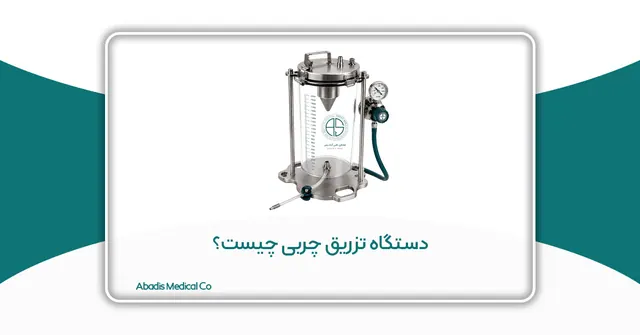
دستگاه تزریق چربی چیست؟
چکیده دستگاه تزریق چربی عنوانی عمومی برای سامانهای است که چربی برداشتشده در جریان لیپوساکشن را جمعآوری کرده و پس از آمادهسازی، به کمک پمپ و از طریق یک مسیر کنترلشده به کانولای تزریق منت…
ادامه مطلب ←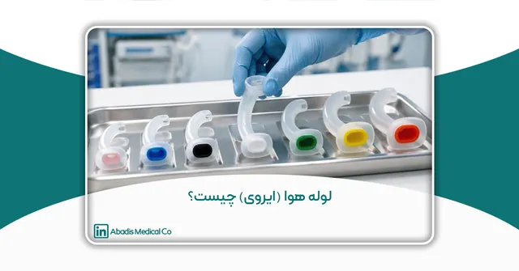
لوله هوا (ایروی) چیست؟
لوله هوا (ایروی) چیست؟ راهنمای انتخاب سایز و استفاده ایمن در مراکز درمانی حفظ باز بودن راه هوایی یکی از نخستین اولویتها در مراقبت از بیماران بدحال، بیهوش یا دچار کاهش سطح هوشیاری است. در چن…
ادامه مطلب ←راهنمای خرید کیسه ساکشن یکبار مصرف برای مراکز درمانی
چکیده کیسه ساکشن یکبار مصرف یکی از تجهیزات مهم برای جمعآوری ترشحات، خون و سایر مایعات بدن در بیمارستانها و مراکز درمانی است. انتخاب درست این محصول میتواند به کاهش تماس کادر درمان با ترشحا…
ادامه مطلب ←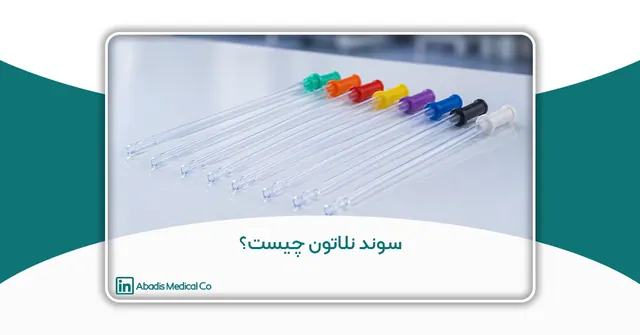
سوند نلاتون چیست؟
مقدمه تخلیه ایمن و مؤثر ادرار یکی از مهمترین اقدامات در مراقبت از بسیاری از بیماران بستری و سرپایی است. در شرایطی مانند احتباس ادرار، برخی بیماریهای نورولوژیک، آسیبهای نخاعی، جراحیهای او…
ادامه مطلب ←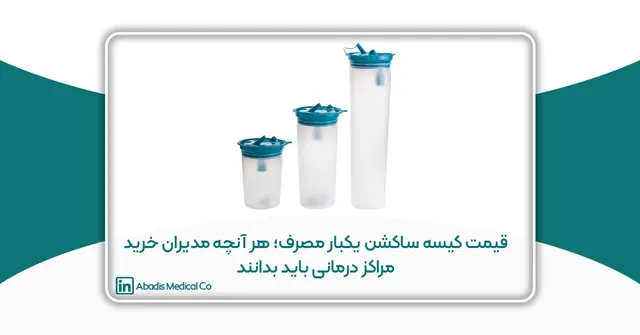
قیمت کیسه ساکشن یکبار مصرف؛ هر آنچه مدیران خرید مراکز درمانی باید بدانند
قیمت کیسه ساکشن یکبار مصرف به چه عواملی بستگی دارد؟ در این راهنمای جامع با عوامل مؤثر بر قیمت، استانداردها، کیفیت مواد اولیه، کنترل عفونت، هزینههای پنهان و نکات مهم خرید برای بیمارستانها و…
ادامه مطلب ←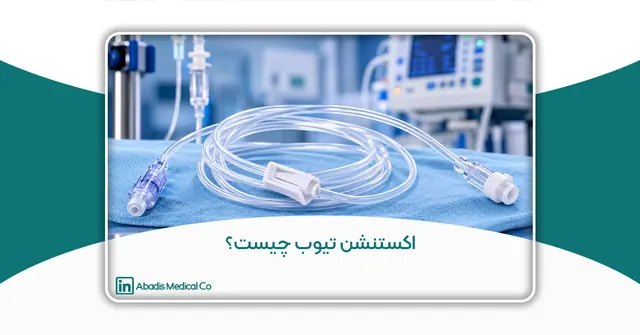
اکستنشن تیوب چیست؟
اکستنشن تیوب (Extension Tube) چیست؟ راهنمای کامل کاربردها، انواع و ویژگیها مقدمه در بسیاری از فرآیندهای درمانی، تنها وجود یک کاتتر، آنژیوکت یا سرنگ برای انتقال ایمن مایعات و داروها کافی نیس…
ادامه مطلب ←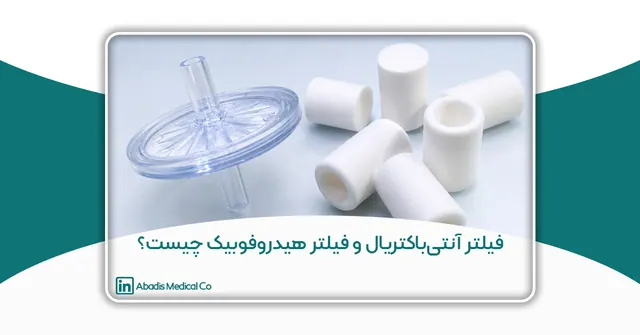
فیلتر آنتیباکتریال و فیلتر هیدروفوبیک چیست؟
مقدمه سیستمهای ساکشن پزشکی از تجهیزات ضروری در مراکز درمانی هستند و نقش مهمی در تخلیه خون، ترشحات، مایعات بیولوژیکی و سایر مواد از بدن بیمار ایفا میکنند. این سیستمها در اتاقهای عمل، بخش…
ادامه مطلب ←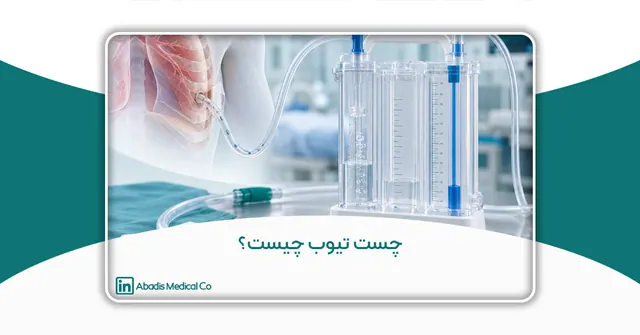
چست تیوب چیست؟
چست تیوب چیست؟ بررسی کاربرد، انواع و نقش آن در درمان بیماران تنفسی و جراحی مقدمه سیستم تنفسی یکی از حیاتیترین بخشهای بدن انسان است و عملکرد صحیح ریهها نقش مستقیمی در تأمین اکسیژن مورد نیا…
ادامه مطلب ←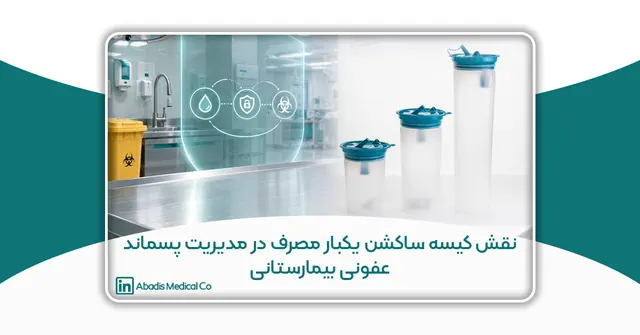
نقش کیسه ساکشن یکبار مصرف در مدیریت پسماند عفونی بیمارستانی
مقدمه مدیریت پسماندهای عفونی یکی از ارکان اصلی ایمنی در مراکز درمانی است و نقش مهمی در پیشگیری از انتقال عوامل بیماریزا، حفظ سلامت کارکنان و بیماران و همچنین کاهش مخاطرات زیستمحیطی ایفا می…
ادامه مطلب ←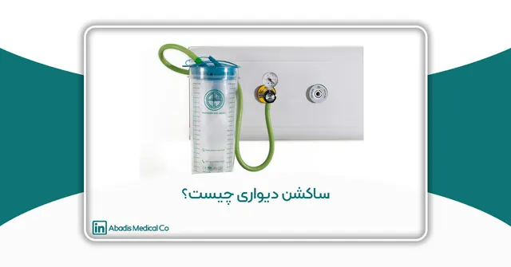
ساکشن دیواری چیست؟
راهنمای جامع انتخاب، کاربرد و مزایای ساکشن دیواری در بیمارستانها مقدمه در محیطهای درمانی، حفظ راه هوایی بیمار و تخلیه مؤثر ترشحات یکی از مهمترین اقدامات مراقبتی محسوب میشود. بیماران بستر…
ادامه مطلب ←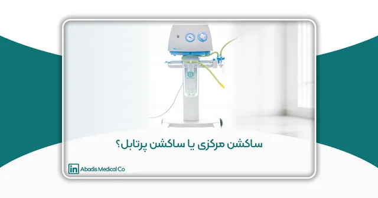
ساکشن مرکزی یا ساکشن پرتابل؟ راهنمای جامع انتخاب سیستم ساکشن برای مراکز درمانی
مقدمه حفظ راه هوایی بیمار و تخلیه مؤثر ترشحات، خون و سایر مایعات بدن، یکی از اساسیترین اقدامات در مراقبتهای پزشکی به شمار میرود. در بسیاری از شرایط درمانی، از جمله جراحیها، مراقبت از بیم…
ادامه مطلب ←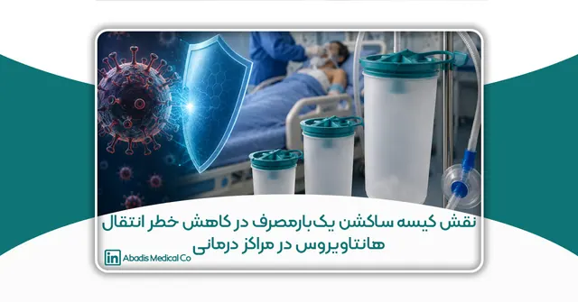
نقش کیسه ساکشن یکبارمصرف در کاهش خطر انتقال هانتاویروس در مراکز درمانی
چکیده هانتاویروسها (Hantaviruses) از جمله ویروسهای نوپدید و خطرناک مشترک بین انسان و حیوان هستند که عمدتاً از طریق تماس با ترشحات، ادرار و مدفوع جوندگان آلوده به انسان منتقل میشوند. این و…
ادامه مطلب ←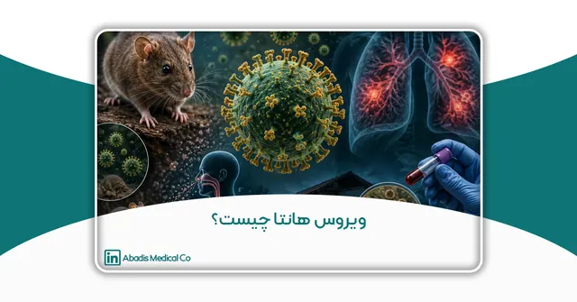
ویروس هانتا چیست؟
بررسی جامع هانتاویروس، راههای انتقال، علائم، تشخیص، درمان و روشهای پیشگیری چکیده هانتاویروسها (Hantaviruses) گروهی از ویروسهای RNA دار و پوششدار متعلق به خانواده Hantaviridae هستند که ع…
ادامه مطلب ←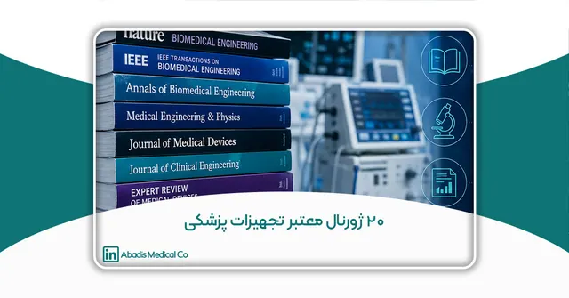
20 ژورنال معتبر تجهیزات پزشکی
مقدمه صنعت تجهیزات پزشکی یکی از پیشرفتهترین و پویاترین صنایع جهان به شمار میرود. رشد سریع فناوریهای سلامت، توسعه تجهیزات تشخیصی و درمانی، گسترش هوش مصنوعی در پزشکی، پیشرفت سامانههای مانی…
ادامه مطلب ←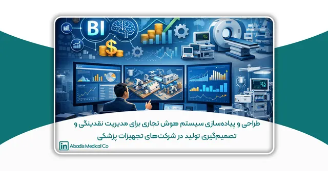
طراحی و پیادهسازی سیستم هوش تجاری برای مدیریت نقدینگی و تصمیمگیری تولید در شرکتهای تجهیزات پزشکی: مطالعه موردی آبادیس
چکیده بیثباتی اقتصادی، نوسانات جریان نقدینگی و تأخیر طولانیمدت در وصول مطالبات بیمارستانی، از مهمترین چالشهای شرکتهای فعال در حوزه تجهیزات پزشکی در ایران محسوب میشود. هدف این پژوهش، طر…
ادامه مطلب ←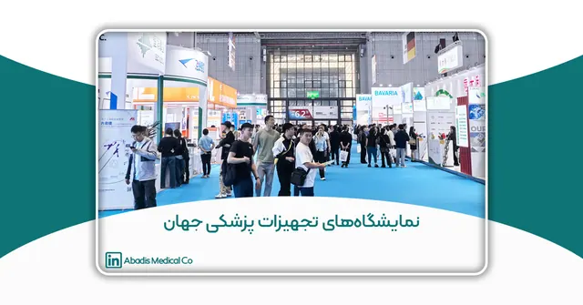
نمایشگاههای تجهیزات پزشکی جهان
مقدمه صنعت تجهیزات پزشکی یکی از راهبردیترین و حساسترین صنایع جهان به شمار میرود؛ صنعتی که بهطور مستقیم با سلامت، ایمنی و جان انسانها در ارتباط است و هرگونه نقص در طراحی، تولید یا عملکرد…
ادامه مطلب ←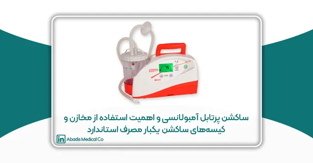
ساکشن پرتابل آمبولانسی و اهمیت استفاده از مخازن و کیسههای ساکشن یکبار مصرف استاندارد
مقدمه در خدمات اورژانس پیشبیمارستانی، مدیریت صحیح و بهموقع راه هوایی بیمار یکی از حیاتیترین مداخلات درمانی محسوب میشود. بسیاری از بیماران اورژانسی، بهویژه در حوادث ترومایی، ایستهای قلب…
ادامه مطلب ←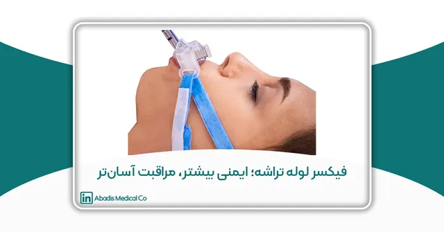
فیکسر لوله تراشه؛ ایمنی بیشتر، مراقبت آسانتر
مقدمه تأمین و حفظ راه هوایی ایمن، یکی از بنیادیترین اصول مراقبت از بیماران در بخشهای مراقبت ویژه، اتاق عمل و اورژانس به شمار میرود. لولهگذاری تراشه بهعنوان یک مداخله حیاتی، نقش کلیدی در…
ادامه مطلب ←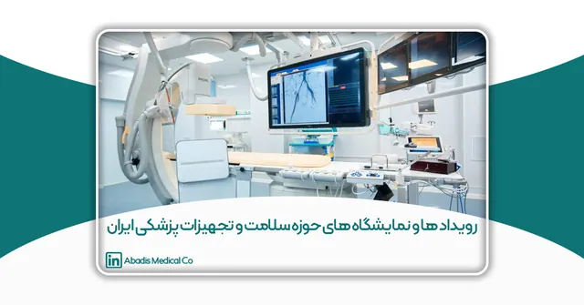
رویدادها و نمایشگاههای حوزه سلامت و تجهیزات پزشکی ایران
مقدمه صنعت تجهیزات پزشکی یکی از راهبردیترین بخشهای نظام سلامت هر کشور بهشمار میرود؛ صنعتی که بهطور مستقیم با کیفیت خدمات درمانی، ایمنی بیماران و کارایی مراکز بهداشتی و درمانی در ارتباط …
ادامه مطلب ←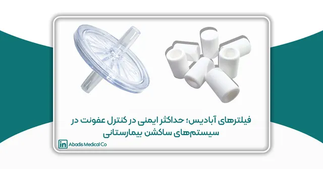
فیلترهای آبادیس؛ حداکثر ایمنی در کنترل عفونت در سیستمهای ساکشن بیمارستانی
در مراکز درمانی، کنترل عفونت یکی از اساسیترین معیارهای حفظ سلامت بیماران و کادر درمان است. سیستمهای کیسه ساکشن یکبارمصرف به دلیل تماس مستقیم با ترشحات، خون و ذرات آلوده، یکی از حساسترین …
ادامه مطلب ←نقش صنایع دانشبنیان در تحقق حکمرانی سبز
نقش صنایع دانشبنیان در تحقق حکمرانی سبز:مطالعه موردی نوآوری پایدار در تولید کیسه ساکشن یکبارمصرف بهعنوان راهکاری برای کاهش مصرف آب و پسماند بیمارستانی این مقاله در سومین کنفرانس و نمایشگا…
ادامه مطلب ←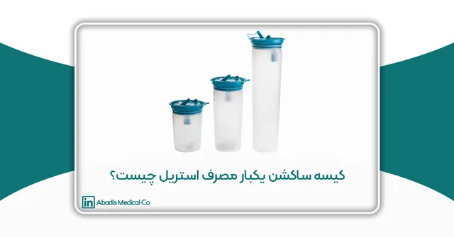
کیسه ساکشن یکبار مصرف استریل چیست؟
مقدمه در پزشکی مدرن، به ویژه در جراحیهای تهاجمی و تخصصی، کنترل عفونت و ایمنی بیمار یکی از اصول بنیادین است که مستقیماً با موفقیت عمل جراحی و کاهش عوارض پس از عمل مرتبط است. انتقال میکروبها…
ادامه مطلب ←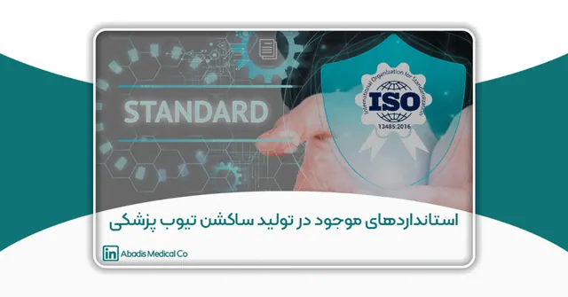
استانداردهای موجود در تولید ساکشن تیوب پزشکی
مقدمه صنعت تجهیزات پزشکی یکی از حیاتیترین صنایع جهان به شمار میرود، زیرا کوچکترین خطا در طراحی یا تولید محصولات آن میتواند منجر به عواقب جبرانناپذیر برای سلامت بیماران شود. در میان ابزا…
ادامه مطلب ←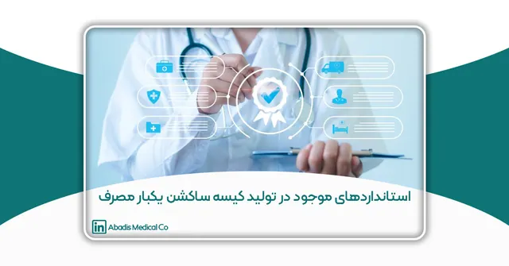
استانداردهای موجود در تولید کیسه ساکشن یکبار مصرف
مقدمه امروزه با پیشرفت علوم پزشکی و گسترش خدمات درمانی، استفاده از تجهیزات پزشکی یکبار مصرف به عنوان بخشی جداییناپذیر از فرآیند درمان و جراحی مطرح شده است. یکی از این تجهیزات، کیسه ساکشن یک…
ادامه مطلب ←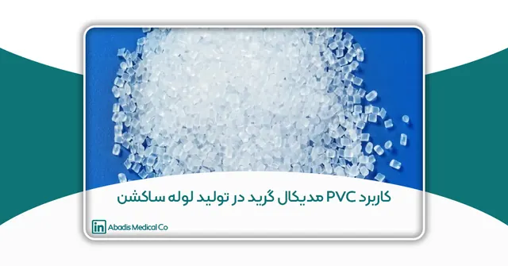
کاربرد PVC مدیکال گرید در تولید لوله ساکشن
مقدمه در صنعت تجهیزات پزشکی، انتخاب مواد اولیهای که هم از نظر عملکردی مؤثر باشند و هم از نظر بهداشتی ایمن باشند اهمیت بالایی دارد. یکی از موادی که طی دهههای اخیر جایگاه ویژهای در تولید لو…
ادامه مطلب ←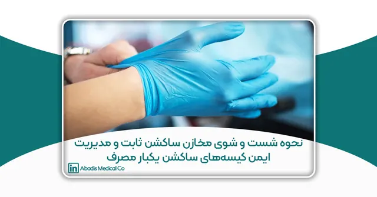
نحوه شست و شوی مخازن ساکشن ثابت و مدیریت ایمن کیسههای ساکشن یکبار مصرف در مراکز درمانی
راهنمای علمی، عملی و مدیریتی بر مبنای استانداردهای WHO و CDC مقدمه در دهههای اخیر، افزایش مقاومت میکروبی، گسترش بیماریهای عفونی و الزامات روزافزون ایمنی بیمار، بیمارستانها و مراکز درمانی …
ادامه مطلب ←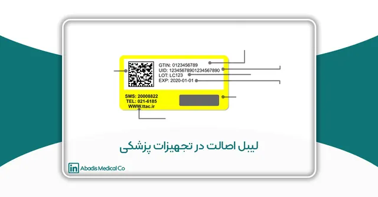
لیبل اصالت در تجهیزات پزشکی
چکیده در دنیای امروز که تجهیزات پزشکی نقشی حیاتی در تشخیص، درمان و مراقبتهای بهداشتی ایفا میکنند، نظارت بر اصالت و سلامت این محصولات اهمیت بسزایی دارد. ورود تجهیزات تقلبی و فاقد مجوز میتو…
ادامه مطلب ←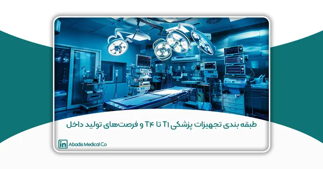
طبقه بندی تجهیزات پزشکی T1 تا T4 و فرصتهای تولید داخل
چکیده با توجه به اهمیت روزافزون تجهیزات پزشکی در نظام سلامت و چالشهای واردات ناشی از تحریمها و نوسانات ارزی، بومیسازی تولید تجهیزات پزشکی به یک ضرورت راهبردی تبدیل شده است. طبقهبندی تجهی…
ادامه مطلب ←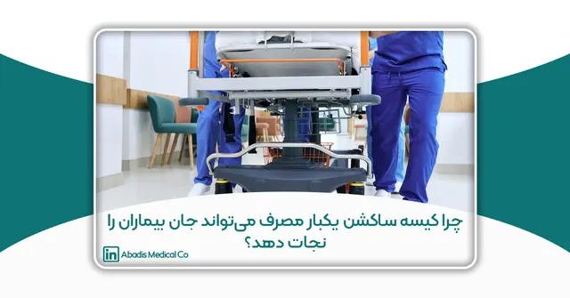
چرا کیسه ساکشن یکبار مصرف میتواند جان بیماران را نجات دهد؟
هدف بررسی مقرون به صرفه بودن باتل ساکشن یکبار مصرف در بیمارستان امام حسن(ع) با استفاده از مقالات مروری مقدمه عفونتهای مرتبط با مراقبتهای بهداشتی باعث بروز مرگ و ناخوشی در بیماران، به ویژه …
ادامه مطلب ←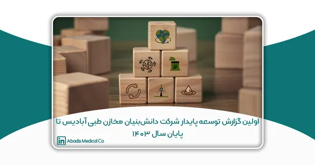
اولین گزارش توسعه پایدار شرکت دانشبنیان مخازن طبی آبادیس تا پایان سال ۱۴۰۳
(بر اساس سند تعهد به اهداف توسعه پایدار سازمان ملل متحد – UN SDGs، مصوب هیئتمدیره و سهامداران در اسفند ۱۴۰۲) چکیده در عصر حاضر، توسعه پایدار به یکی از مهمترین الزامات صنایع بهداشتی و درما…
ادامه مطلب ←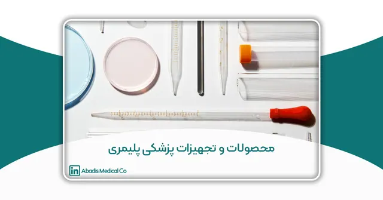
محصولات و تجهیزات پزشکی پلیمری
بررسی علمی تجهیزات پزشکی پلیمری، مزایا، کاربردها و معرفی کیسه ساکشن یکبار مصرف آبادیس؛ راهکاری نوآورانه در کنترل عفونت بیمارستانی.
ادامه مطلب ←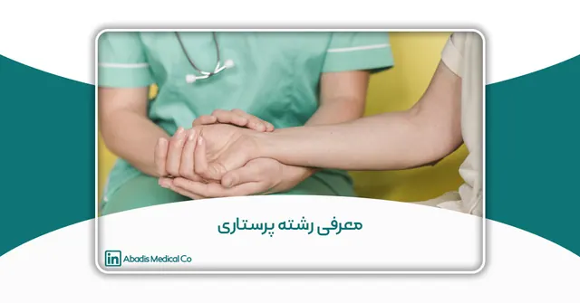
معرفی رشته پرستاری | بازار کار، دانشگاهها، مهاجرت
رشته پرستاری یکی از مهمترین و پرطرفدارترین شاخههای علوم پزشکی است که نقش اساسی در ارتقاء سلامت فردی و اجتماعی دارد.
ادامه مطلب ←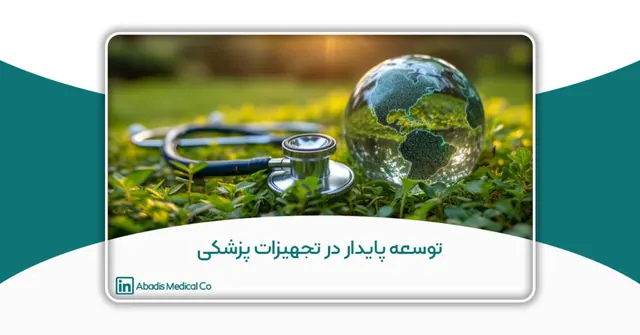
توسعه پایدار در تجهیزات پزشکی؛ گامی بهسوی حفظ محیط زیست
مقاله جامع درباره توسعه پایدار، اهداف و ارکان آن و نقش تجهیزات پزشکی در این مسیر، با تأکید بر اهمیت حفظ محیط زیست و مسئولیتپذیری صنعتی.
ادامه مطلب ←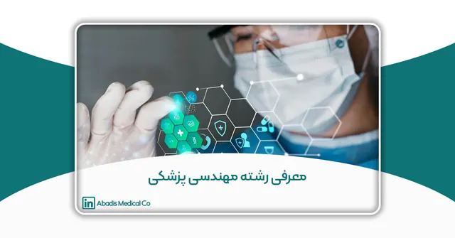
معرفی رشته مهندسی پزشکی
مهندسی پزشکی یکی از مهمترین حوزههای میانرشتهای است که ترکیبی از علوم مهندسی و پزشکی را برای توسعه فناوریهای مرتبط با سلامت به کار میگیرد.
ادامه مطلب ←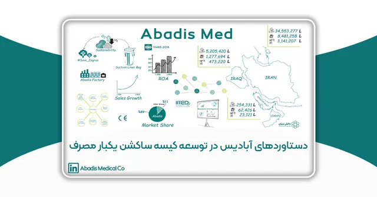
دستاوردهای شرکت مخازن طبی آبادیس در توسعه کیسه ساکشن یکبار مصرف
دستاوردهای شرکت مخازن طبی آبادیس در توسعه کیسه ساکشن یکبار مصرف: تحولی در مدیریت بیمارستانی و حفاظت از محیط زیست چکیده کیسه ساکشن یکبار مصرف یکی از فناوریهای نوین در مدیریت مایعات عفونی بیم…
ادامه مطلب ←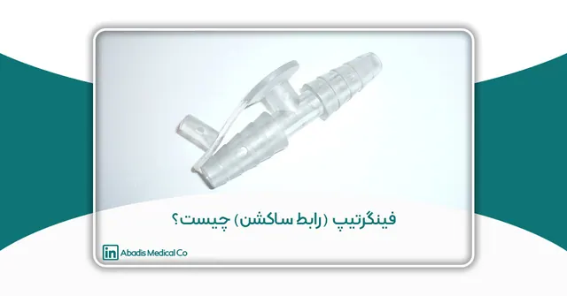
فینگرتیپ (رابط ساکشن) چیست؟
فینگرتیپ یا رابط ساکشن یکی از اجزای کلیدی سیستمهای ساکشن پزشکی است که نقش مهمی در کنترل و تنظیم مکش مایعات و ترشحات ایفا میکند.
ادامه مطلب ←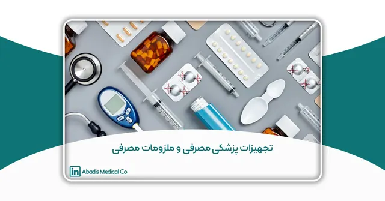
تجهیزات پزشکی مصرفی و ملزومات پزشکی مصرفی
در سیستمهای درمانی و بیمارستانی، کیفیت تجهیزات پزشکی مصرفی و ملزومات پزشکی مصرفی تأثیر مستقیمی بر سلامت بیماران و ایمنی کادر درمان دارد.
ادامه مطلب ←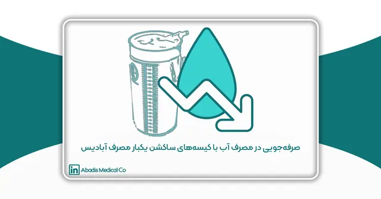
صرفهجویی در مصرف آب با کیسههای ساکشن یکبار مصرف آبادیس
استفاده از کیسه ساکشن یکبار مصرف در مراکز درمانی به عنوان یک راهکار مؤثر و کارآمد برای بهینهسازی مدیریت پساب های بیمارستانی، کاهش خطر انتقال عفونتهای بیمارستانی و کاهش مصرف آب در بیمارستان…
ادامه مطلب ←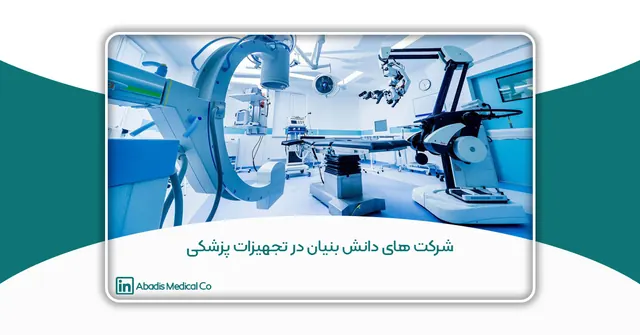
شرکتهای دانشبنیان در صنعت تجهیزات پزشکی ایران
در این مقاله، نقش شرکتهای دانشبنیان در صنعت تجهیزات پزشکی را بررسی خواهیم کرد و به فرصتها، چالشها و راهکارهای توسعه این صنعت میپردازیم. نمونههایی از شرکتهای موفق، ازجمله شرکت دانشبنی…
ادامه مطلب ←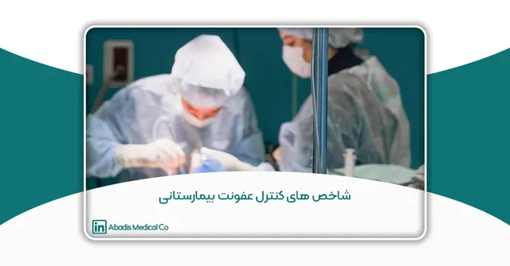
شاخصهای کنترل عفونت بیمارستانی
در این مقاله، تلاش شده است تا با بررسی شاخصهای کنترل عفونت بیمارستانی و ارائه اطلاعات دقیق، گامی مؤثر در ارتقای کیفیت خدمات درمانی و پیشگیری از عفونتهای بیمارستانی برداشته شود. همچنین نقش …
ادامه مطلب ←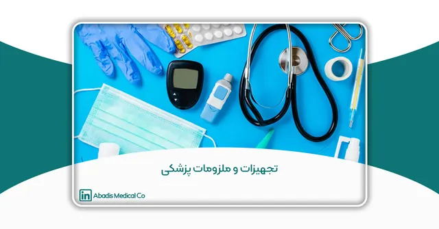
تجهیزات و ملزومات پزشکی
صنعت تجهیزات پزشکی و تولید ملزومات مصرفی بیمارستانی، از جمله تولید کیسه ساکشن یکبار مصرف آبادیس، در دهههای اخیر به دلیل پیشرفتهای فناورانه و افزایش تقاضای جهانی، رشد چشمگیری داشته است. در …
ادامه مطلب ←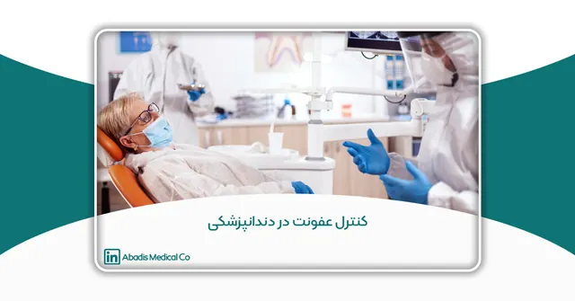
کنترل عفونت در دندانپزشکی
مقدمه کنترل عفونت یکی از جنبههای حیاتی دندانپزشکی مدرن است که هدف آن حفظ سلامت بیماران و حرفهایهای بهداشت دندان است. با توجه به نزدیکی که دندانپزشکان با دهان بیماران دارند—محیطی که پر از …
ادامه مطلب ←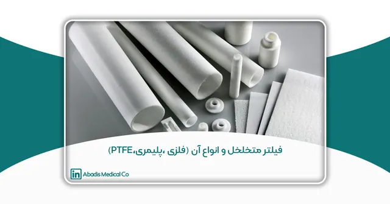
فیلتر متخلخل و انواع آن (فلزی ،پلیمری،PTFE)
همانطور که در مقاله فیلترهای متخلخل در صنعت پزشکی گفته شد؛ فیلترهای متخلخل اجزای اساسی در سیستمهای فیلتراسیون هستند که برای تصفیه، جداسازی یا به دام انداختن ذرات مایعات و گازها، طراحی شدها…
ادامه مطلب ←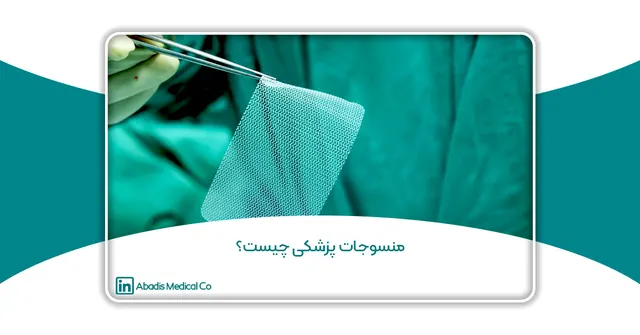
منسوجات پزشکی چیست؟
مقدمه منسوجات پزشکی، به عنوان بخشی تخصصی از نساجیهای فنی، نقش حیاتی در مراقبتهای بهداشتی مدرن ایفا میکنند و بهطور عمده در بهبود درمان، مراقبت از بیماران و مدیریت کلی سلامت مورد استفاده ق…
ادامه مطلب ←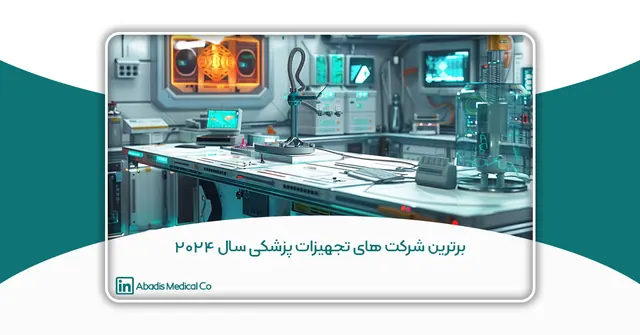
برترین شرکتهای تجهیزات پزشکی جهان براساس نوآوری در سال ۲۰۲۴
مقدمه در دنیای پرشتاب و در حال تحول صنعت بهداشت و درمان، شرکتهای تجهیزات پزشکی نقشی حیاتی در پیشرفتهای نوین و بهبود کیفیت زندگی دارند. در سالهای اخیر، پیشرفتهای چشمگیر در فناوری دستگاهه…
ادامه مطلب ←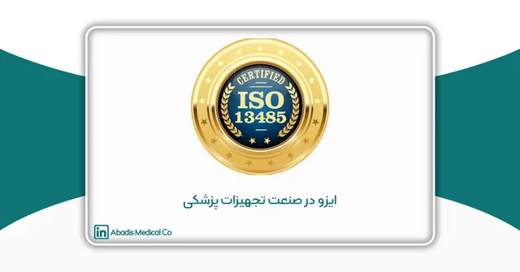
ایزو در صنعت تجهیزات پزشکی
مقدمه ISO (سازمان بین المللی استاندارد) فدراسیون جهانی استانداردهای ملی است؛ ایزو 13485 یک استاندارد بین المللی است که الزامات یک سیستم مدیریت کیفیت در صنعت تجهیزات پزشکی را مشخص می کند؛ ای…
ادامه مطلب ←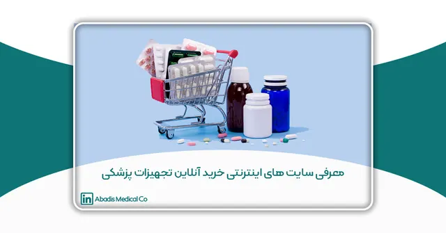
معرفی سایت های اینترنتی خرید آنلاین تجهیزات پزشکی
مقدمه با گسترش فناوری و افزایش دسترسی به اینترنت، روشهای خرید و فروش نیز دستخوش تحولات چشمگیری شدهاند. در این میان، خرید آنلاین به عنوان یکی از مهمترین و پرکاربردترین شیوههای تجاری دنیای…
ادامه مطلب ←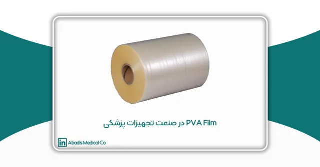
فیلم PVA در صنعت تجهیزات پزشکی
مقدمه فیلم پلیوینیل الکل (PVA) به عنوان یک ماده پیشرفته که به دلیل ویژگیهای قابل توجهی مانند حلالیت در آب و تجزیهپذیری در صنایع مختلف مورد توجه قرار گرفته است. این فیلم ابتدا برای کاربرده…
ادامه مطلب ←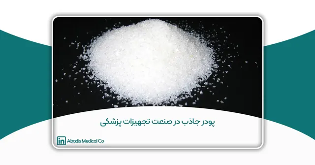
پودر جاذب در صنعت تجهیزات پزشکی
مقدمه پودر جاذب (SAP) مادهای است که قابلیت جذب و نگهداری مقادیر زیادی از مایعات را داراست. این مواد عمدتاً به شکل شکر پودر یا ذرات ریز هستند و میتوانند مایعات را به سرعت جذب کرده و آنها را…
ادامه مطلب ←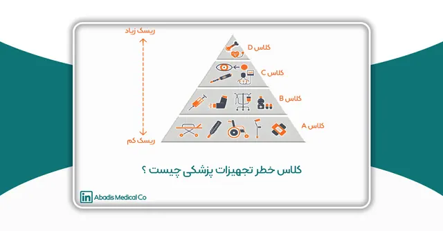
کلاس خطر تجهیزات پزشکی چیست ؟
مقدمه تجهیزات پزشکی براساس میزان خطر، ریسک، اهمیت محصول و همچنین میزان تماس آن با بدن انسان طبقه بندی می شوند؛ در سال ۱۹۷۶ قانون فدرال مصوب سازمان غذا و دارو آمریکا (FDA)، سیستم کلاس بندی تج…
ادامه مطلب ←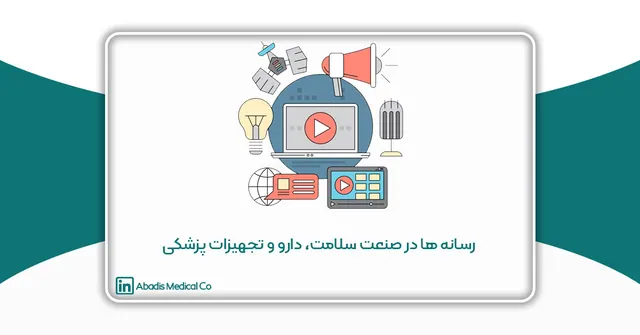
رسانه ها در صنعت سلامت، دارو و تجهیزات پزشکی
مقدمه در دنیای امروز، رسانهها نقش حیاتی در تمامی صنایع و همچنین صنعت سلامت، دارو و تجهیزات پزشکی ایفا میکنند. این نقش شامل طیف گستردهای از فعالیتها است که از اطلاعرسانی و آموزش عمومی تا…
ادامه مطلب ←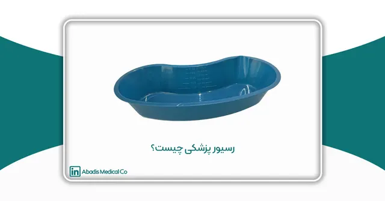
رسیور پزشکی چیست؟
مقدمه در محیطهای پزشکی،اعم از مراکز درمانی و بیمارستانها،دندانپزشکیها و خانه سالمندان رسیور پزشکی نقش حیاتی و کاربردی دارد. از رسیور پزشکی آبادیس جهت نگهداری از تجهیزات پزشکی و جراحی ما…
ادامه مطلب ←فیلترهای متخلخل در صنعت پزشکی
مقدمه فیلتر های متخلخل یا فیلترهای زینتر شده (Porous Sinter Filter) در طیف وسیعی از صنایع برای جداسازی گازها و مایعات استفاده می شوند؛ برخی از این صنایع عبارتند از: بیوشیمی، داروسازی، نساجی…
ادامه مطلب ←آشنایی با اتحادیهها و تشکلهای تجهیزات پزشکی
هدف این مقاله آشنایی و بهدست آوردن تصویری از تشکلهای صنعت تجهیزات پزشکی است؛ که در این مقاله قصد داریم به معرفی برخی از این تشکلها بپردازیم.
ادامه مطلب ←لوله ساکشن (ساکشن تیوب) چیست؟
ساکشن تیوب یا لوله ساکشن یک لوله رابط پزشکی قابل انعطاف از جنس پلی وینیل کلراید (PVC) است که برای تخلیه خون و ترشحات از بدن بیمار به دستگاه ساکشن متصل می شود.
ادامه مطلب ←بررسی شاخصهای میکروبی و شیمیایی آب ورودی به دستگاه همودیالیز در بیمارستان امام رضا (ع) مشهد
بررسی شاخصهای میکروبی و شیمیایی آب ورودی به دستگاههای RO همودیالیز در مجتمع بیمارستانی امام رضا (ع) شهر مشهد در سال 1401 این مقاله برای یازدهمین کنگره کنترل عفونت نوشته و ارسال شده است. چک…
ادامه مطلب ←بررسی فراوانی پنومونی ناشی از ونتیلاتور به تفکیک نوع میکروارگانیسم در بخشهای مراقبتهای ویژه مرکز آموزشی درمانی شهید باهنر کرمان
این مقاله توسط سرکارخانم الهام حاجی پور، جناب آقای نادر اسکندری، سرکارخانم نجمه شهسواری، سرکارخانم گیتی افشاری پور سرکارخانم اسماء حاج علیزاده و جمیله عسکری نوشته شده؛ و برای یازدهمین کنگ…
ادامه مطلب ←میزان دانش مراقبت در پیشگیری و کنترل پنومونی ناشی از ونتیلاتور پرستاران ICU مراکز آموزشی درمانی و بیمارستانهای گیلان در سال 1402
میزان دانش مراقبت بسته ای در پیشگیری و کنترل پنومونی ناشی از ونتیلاتور (VAP) پرستاران شاغل در بخش های مراقبت ویژه مراکز آموزشی درمانی و بیمارستان های تابعه دانشگاه علوم پزشکی گیلان در سال 14…
ادامه مطلب ←ارتقا فرايند بیولوژيک تصفیه خانه فاضلاب بیمارستان خیريه غیاثی
ارتقا فرايند بیولوژيک تصفیه خانه فاضلاب بیمارستان خیريه غیاثی با الحاق راكتورآنوكسیک به سیستم لجن فعال این مقاله توسط سرکارخانم حکيمه دست پاک و سرکارخانم سميه توكلی نوشته شده؛ و برای یازدهم…
ادامه مطلب ←وسایل یکبار مصرف پزشکی و استانداردهای فرآوری مجدد ایمن و پایداری در محیطهای بهداشتی
این مقاله توسط سرکارخانم آناهید زارع و زهرا قاسمی نوشته شده؛ و برای یازدهمین کنگره کنترل عفونت ارسال شده است. چکیده وسایل یکبار مصرف پزشکی با توجه به جایگاه اساسی در ارتقا بهداشت عمو…
ادامه مطلب ←مديريت پسماند هاى عفونی بيمارستان
این مقاله توسط سرکارخانم دكتر منصوره ابوفاضلی، جناب آقای نيمارضاعلی و سرکارخانم نيلوفررضاعلی نوشته شده؛ و برای یازدهمین کنگره کنترل عفونت ارسال شده است. چكيده پسماندهاى بيمارستانی، زائداتی ه…
ادامه مطلب ←بررسی میزان رعایت بهداشت دست کارکنان درمانی در بیمارستان تأمین اجتماعی زاهدان درسال ۱۴۰۲
این مقاله توسط سرکارخانم صدیقه تیموری و محبوبه فروزنده نوشته شده؛ و برای یازدهمین کنگره کنترل عفونت ارسال شده است. خلاصه مقدمه شستشوی دست از ساده ترین استراتژیهای پیشگیری کننده از عفونت اس…
ادامه مطلب ←ارزیابی مقایسهای مدیریت مصرف آنتی بیوتیکهای پرهزینه در ۶ ماهه اول سال ۱۴۰۱ و ۱۴۰۲
این مقاله توسط جناب آقای علی روکا، سرکارخانم رویا ذاکری، سرکارخانم طیبه رضایی و جناب آقای قنبر گلدوست نوشته شده؛ و برای یازدهمین کنگره کنترل عفونت ارسال شده است. مقدمه تلاش برای منطقی کردن…
ادامه مطلب ←بررسی مشكلات استفاده از وسايل حفاظت فردى در كادر درمانی بيمارستان دكتر مسيح دانشورى
این مقاله برای یازدهمین کنگره کنترل عفونت نوشته و ارسال شده است. چكيده مقدمه در زمان طغيان بيمارى كوويد۱۹، پرسنل درماني خط مقدم مي بايست از وسايل حفاظتی فردى براى طولانی مدت استفاده نمايند ك…
ادامه مطلب ←تبعیت از دستورالعمل های پیشگیری کننده از انتقال کووید-19 در اتاق عمل
این مقاله توسط جناب آقای امین درخشان، جناب آقای آرمین فریدونی، جناب آقای اسماعیل تیموری، سرکارخانم مریم قنواتی، سرکارخانم زهرا ملکی نوشته شده؛ و برای یازدهمین کنگره کنترل عفونت ارسال شده ا…
ادامه مطلب ←حذف آنتیبیوتیک ونکومایسین با استفاده از روش فتوکاتالیستی
این مقاله توسط سرکارخانم فاطمه دهقانی نوشته شده؛ و برای یازدهمین کنگره کنترل عفونت ارسال شده است. خلاصه آنتیبیوتیکها در آبهای سطحی، زیرزمینی،تصفیه خانههای فاضلاب و حتی آب آشامیدنی شناس…
ادامه مطلب ←ارزيابي و تحليل مواجهات شغلی کادر درمانی بيمارستان حجت كوه كمری مرند در 6 ماهه اول 1402
این مقاله توسط سرکارخانم رويا ذاكرى، سرکار خانم طيبه رضائی، جناب آقای قنبر گلدوست، جناب آقای علی روكا و سرکارخانم معصومه عابدينی نوشته شده؛ و برای یازدهمین کنگره کنترل عفونت ارسال شده است. …
ادامه مطلب ←طراحی و اجرای دستورالعمل مدیریت مصرف ونکومایسین در بخش ارتوپدی
این مقاله توسط سرکارخانم رویا توکلی کرمانی و راضیه غفوری نوشته شده؛ و برای یازدهمین کنگره کنترل عفونت ارسال شده است. خلاصه مقدمه مقاومت ضد میکروبی (AMR) در قرن بیست و یکم به یک اورژانس جهان…
ادامه مطلب ←اجرا و رعایت توصیه نامه های بهداشتی ارائه خدمات دندانپزشکی در زمان پاندمی کووید ۱۹
این مقاله توسط جناب آقای دکتر امیر محمد قانی، مهندس محمد بهرامی، مهندس محمد آقابابایی نوشته شده؛ و برای یازدهمین کنگره کنترل عفونت ارسال شده است. اجرا و رعایت توصیه نامه های بهداشتی ارائه خد…
ادامه مطلب ←الگوی مقاومت آنتی بیوتیکی باکتریهای جدا شده از عفونت های بیمارستانی
این مقاله توسط سرکارخانم دکتر ساره باقری جوشقانی، زهره سادات میرحسینی، سعیده مهماندوست، نسرین شادمهر، لیلا عباسی نوشته شده؛ و برای یازدهمین کنگره کنترل عفونت ارسال شده است. مقدمه و هدف امروز…
ادامه مطلب ←پروتکل جامع فرآیند ضد عفونی با نور فرابنفش UVC
این مقاله توسط جناب آقای هومن سرکان، سید علیرضا ظفر میرمحمدی و محمدحامد ازمیری نوشته شده؛ و برای یازدهمین کنگره کنترل عفونت ارسال شده است. مقدمه در حوزه مراقبتهای بهداشتی مدرن، مبارزه با ب…
ادامه مطلب ←سیستم شستشوی بیمار و ضدعفونیکننده تجھیزات با استفاده از سیستم ونتوری
این مقاله توسط جناب آقای نامدار جانان نوشته شده؛ و برای یازدهمین کنگره کنترل عفونت ارسال شده است. مقدمه عفونتھای بیمارستانی یکی از مھمترین علل مرگ و میر و افزایش ھزینهھا محسوب میشوند. 25…
ادامه مطلب ←باتل ساکشن یکبار مصرف در ایران: آیا مقرون به صرفه است؟
با توجه به یافته های این پژوهش، باید تمامی باتل های ساکشن یکبار مصرف آبادیس برای هر بیمار جداگانه خریداری و استفاده شود. اما در کشور ایران با توجه کمبود نیروی انسانی برای ضدعفونی باتل ساکشن …
ادامه مطلب ←بهبود اثرات زیست محیطی با استفاده از کیسه ساکشن یکبار مصرف
حفظ محیط زیست یک مسئله کلیدی است و دفع نادرست مایعات عفونی بیمارستان ها برای سلامتی انسان و محیط زیست خطرات جبران ناپذیری را به همراه دارد و سبب ایجاد بیماری میگردد.در این مقاله به بررسی موض…
ادامه مطلب ←نظام مراقبت عفونت های بیمارستانی و پیشگیری و کنترل عفونت های ناشی از ارایه خدمات سلامت
عفونت های مرتبط با خدمات/ مراقبت سلامت مشکلی مشترک در تمام کشورهای دنیا بوده و به عنوان تهدیدی مداوم برای عملکرد موثر و صحیح مراکز ارائه دهنده خدمات سلامت می باشند و می توانند به طور ناخواست…
ادامه مطلب ←بررسی علل ایجاد پریتونیت در بخش دیالیز صفاقی مرکز آموزشی درمانی الزهرا (س)
پریتونیت عبارت است از التهاب صفاق یا بخشی از آن می باشد و به عنوان یکی از اورژانس های جراحی عمومی محسوب می شود که در صورت عدم تشخیص و درمان بموقع مرگ و میر را تا سه برابر افزایش میدهد. در پر…
ادامه مطلب ←دستورالعمل اجرایی نحوه ضدعفونی ابزار و تجهيزات پزشكی
در جهان هر ساله صدها میلیون نفر از مردم توسط عفونت های قابل اجتناب مرتبط با مراقبت های بهداشتی درمانی تحت تاثیر قرار می گیرند عوامل تعیین کننده عفونت های مذکور توسط ترکیب پیچیده شامل شکاف مو…
ادامه مطلب ←بررسی آلودگی های قارچی به ويژه عوامل موكورال (قارچ سياه) در هوای بخش های بستری بيماران مبتلا به كرونا در شهر مشهد در سال 1400
عفونت های قارچي مهاجم ،يکي از مسائل حائز اهميت در بخش های پر خطر بيمارستانی می باشند.قارچ های فرصت طلب، اين عفونت ها را در اكثر موارد در بيماران دچار نقص ايمني و سايرنقص های سلامتي به وجود م…
ادامه مطلب ←مقایسهی نانو-واکسن ها و واکسن های بر پایهی mRNA در پیش گیری و کنترل مقاومت میکروبی
مقاومت میکروبی، Resistance Microbial-Anti(AMR)، در نتیجه مصرف بی رویه و بعضا نادرست آنتی بیوتیک های موجود، به عنوان یک فاجعه بشری رو به گسترش، از جدی ترین انواع تهدیدها علیه بهداشت عمومی و س…
ادامه مطلب ←مخزن ساکشن چیست و انواع آن | شرکت تجهیزات پزشکی مخازن طبی آبادیس
یکی از دستگاه هایی که تقریبا در تمام مراکز بهداشتی و درمانی دیده میشود؛ انواع مخزن ساکشن است. | شرکت مخازن طبی آبادیس
ادامه مطلب ←امحا زباله های بیمارستانی مهم ترین مسائل مربوط به مدیریت پسماندها
هدف ما در این مقاله توضیح نحوه امحا زباله های بیمارستانی با استفاده از راهحلهای مؤثر در محیطهای مراقبت بهداشتی است | مخازن طبی آبادیس
ادامه مطلب ←تصفیه فاضلاب بیمارستانی با استفاده از فناوریهای نوظهور که باید بشناسید
سیستمهای نوین در حذف آلایندههای فاضلاب بیمارستان بسیار کارآمد هستند و میتوانند تصفیه فاضلاب بیمارستانی را ارتقاء دهند.
ادامه مطلب ←پسماندهای عفونی بیمارستانی
از جمله خطرناکترین نوع زبالهها، میتوان به پسماندهای عفونی بیمارستانی اشاره کرد؛ این پسماندها میتوانند از جمله عوامل بیماریزا و تهدیدکننده سلامت انسان و حتی دیگر موجودات باشند. برای دفع …
ادامه مطلب ←کنترل عفونت در بیمارستان
کنترل عفونت در بیمارستان شاید برای شما سؤال شده باشد که کنترل عفونت در بیمارستان چگونه صورت میگیرد؟ با ما همراه باشید که پاسخ سؤال خود را دریابید. همچنین در این مقاله سعی کردیم که درباره تا…
ادامه مطلب ←دستگاه ساکشن در کنار پزشکان، مبارزهای درمانی هستند
متا: دستگاه ساکشن جزو تجهیزات قدرتمند و باارزش صنعت پزشکی محسوب میشود که دست راست پزشکان است. برای اطلاع از صفر تا صد این دستگاه این مقاله را مطالعه کنید.
ادامه مطلب ←انواع فیلترهای کیسه ساکشن به همراه توضیحات و کاربردهای آنها
برای آشنایی کامل با دستگاه ساکشن و انواع فیلترهای کیسه ساکشن حتماً این مقاله را مطالعه کنید. در این مقاله سعی کردیم به طور کامل شما را با این دستگاه آشنا کنیم و استفاده هر فیلتر را برای شما …
ادامه مطلب ←رگولاتور ساکشن چیست؟ نحوه کارکرد و ویژگیهای آن
برای درک بهتر سؤال رگولاتور ساکشن چیست؟ فقط کافی است این مقاله را مطالعه کنید. در مقاله همچنین نحوه کار این دستگاه به همراه ویژگیهای آن را برای شما توضیح دادهایم.
ادامه مطلب ←کیسه ساکشن چیست؟ تمامی اطلاعات در رابطه با کیسه ساکشن
آیا میدانید کیسه ساکشن چیست؟ برای پاسخ به این سوال، آشنایی با انواع آن و مزیتهای کیسهها حتما این مقاله را مطالعه کنید. همچنین درباره جزئیات مهم و تاریخچه این دستگاه برای شما مطالب مفیدی ج…
ادامه مطلب ←زباله های پلاستیکی معضل قدیمی و افزایشی بهداشت جهانی
زباله های بیمارستانی ممکن است اولین انجمن در مورد زباله های پلاستیکی نباشند ، با این وجود حجم قابل توجهی را نشان می دهد.
ادامه مطلب ←مبارزه با خطرات ناشی از عفونت (کنترل عفونت) با مدیریت هوشمند پسماند مایعات
مبارزه با خطرات ناشی از عفونت (کنترل عفونت) با مدیریت هوشمند پسماند مایعات پیشرفت در علم و مراقبت های بهداشتی منجر به بهبود کنترل عفونت برای ایمنی بیماران و متخصصان می شود تا سال های گذشته ک…
ادامه مطلب ←زباله های بیمارستانی
زباله های بیمارستانی زباله های بیمارستانی یا پزشکی که حاصل از فعالیت بیمارستان ها ، مراکز درمانی ، آزمایشگاه ها و درمانگاه ها هستند، تهدیدی بسیار جدی برای انسان و محیط زیست می باشند و می توا…
ادامه مطلب ←اصول و مبانی کنترل عفونت های بیمارستانی ( قسمت2)
عفونت های بیمارستانی شایع از جمله شایعترین عفونت های بیمارستانی می توان به عفونت های ادراری اشاره کرد که به دلیل عدم کفایت روش های ضدعفونی در هنگام قرار دادن سوند ایجاد می شود و حدود ۴۰ درصد…
ادامه مطلب ←اصول و مبانی کنترل عفونت های بیمارستانی
عفونت بیمارستانی مسئله بسیار مهمی است که همیشه مورد توجه افرادی که مسئولیت مراقبت از بیماران را بر عهده دارند بوده است.
ادامه مطلب ←خطرات ناشی از استفاده مخزن های ساکشن دائم
مخزن های ساکشن به طور معمول در هر مرکز درمانی مورد استفاده قرار میگیرند. این مخزن ها سبب می شود که هیچ جزء جامد و مایعی معلق روی هوا باقی نماند و سبب ایجاد عفونت نگردد.
ادامه مطلب ←کنترل عفونت بیمارستانی در دوران پسا کرونا
شیوع ویروس کرونا از۳۰ بهمن سال ۱۳۹۸ زندگی جامعه بشری را دستخوش تغییرات فراوانی کرده است و در حال حاضر نیز تمام ابعاد زندگی انسان ها را تحت تاثیر خود قرار داده است . پسا کرونا یعنی دوران زندگ…
ادامه مطلب ←راهنمای نصب مخازن
[av_section min_height=” min_height_pc=’25’ min_height_px=’500px’ padding=’default’ custom_margin=’0px’ custom_margin_sync=’true’ color=’main_color’ background=’bg_gradient’ custom_bg=” back…
ادامه مطلب ←تاریخچه و نکات بهداشتی مهم در پیشگیری و کنترل ویروس کرونا ۲۰۱۹
مطلب ذیل بر اساس آخرین اطالعات منتشر شده از منابع معتبر تا ۸ اسفند ۲۷( ۱۳۹۸ فوریه )۲۰۲۰ گردآوری شده است و قطعا در روزها وماه های آتی با انتشار یافته های...
ادامه مطلب ←چگونه کرونا را از سرماخوردگی و آنفلوانزا تشخیص دهیم؟
کثر مردم فرق بین ویروس کرونا، سرماخوردگی و آنفلوانزا را تشخیص نمیدهند این باعث شده با هر علامتی فکر کنند به کرونا مبتلا شده اند. فصل زمستان ...
ادامه مطلب ←انواع دستگاه ساکشن
انواع دستگاه ساکشن -ساکشن پرتابل (قابل حمل) -ساکشن مرکزی در مراکزی با ساکشن مرکزی در تجهیزات موتورخانه این مرکز یک پمپ خلاء وجود دارد که محفظههایی از خلاء تولید میکند این خلاء بواسطه لوله…
ادامه مطلب ←کیسه هاى یکبار مصرف ساکشن
یسههاى یکبار مصرف ساکشن بعد از شرح مساله کنترل عفونتهاى بیمارستانى، کیسههاى یکبار مصرف دفع بهداشتى ساکشن را که در این مقوله بسیار موثرند معرفى و ...
ادامه مطلب ←فیکسر - نگهدارنده لوله تراشه
[:fa]دستورات استفادهی فیكسر (نگهدارنده) لوله تراشه (غیر استریل) یك بار مصرف فیكسر (نگهدارنده لوله تراشه) آبادیس چیست؟ برای محكم كردن لوله تراشه در یك موقعیت مناسب در دهان بیمار از فیكسر (ن…
ادامه مطلب ←معرفی سایتهای معتبر مهندسی پزشکی
در این بخش از سایت می خواهیم شما را با چند وب سایت در زمینه مهندسی پزشکی آشنا کنیم. هر یک از این وب سایت ها، بخشی از رشته مهندسی پزشکی شامل...
ادامه مطلب ←معرفی کیسه ساکشن یکبارمصرف
ابتدا به شرح مساله کنترل عفونت های بیمارستانی پرداخته و سپس کیسه ساکشن های یکبار مصرف دفع بهداشتی ساکشن را که در این مقوله بسیار موثرند معرفی و ویژگی های مختلف آن ها را بیان می کنیم. ریسک اب…
ادامه مطلب ←تعریف عفونت های بیمارستانی و انواع آن
عفونت عفونت چیست؟ بشر از ابتدای آفرینش همواره در حال پیدا کردن راه هایی جهت محافظت خود در مقابل عوامل طبیعی مثل سرما، گرما و بسیاری از عوامل بیماری زا و عفونت زا بوده و هدف وی بقای نسل خویش …
ادامه مطلب ←معرفی متداول ترین پاتوژن ها | تعریف پاتوژن
پاتوژن یک کلمه ریشه فرانسوی است که در فرهنگ معین به معنی هر عاملی که سبب ایجاد بیماری شود را پاتوژن می گویند.
ادامه مطلب ←انواع عفونتهای بیمارستانی
عفونتهای بیمارستانی انواع متفاوتی دارند که از مهم ترین آنها می توان به موارد زیر اشاره نمود: عفونت زخم عمل جراحی عفونت خون یا سپسیس عفونت های ادراری عفونت زخم جراحی به عنوان یکی از عفونت…
ادامه مطلب ←استفاده از تجهیزات و محصولات بیمارستانی با کیفیت
صرف نظر از این که یک بیمارستان به صورت دولتی اداره شود یا خصوصی، کیفیت تجهیزات و محصولات بیمارستانی به کار برده شده در آن می تواند امری کاملا تعیین کننده باشد.
ادامه مطلب ←گیره T شکل
از این گیره برای اتصال سری بین مخازن استفاده می شود
ادامه مطلب ←مقاله بررسی میزان بروز عفونت بیمارستانی (قسمت سوم)
بررسی میزان بروز عفونت بیمارستانی از آنجایی که بیمارستانها مهمترین مرکز در ارائه خدمات بهداشتی، درمانی محسوب میشوند به دلیل داشتن شرایط خاص از نظر پذیرش افراد با بیماریهای مختلف ،وجود افر…
ادامه مطلب ←مقاله بررسی میزان بروز عفونت بیمارستانی (قسمت اول)
بررسی میزان بروز عفونت بیمارستانی دریکی از بیمارستانهای استان قم(سال ۸۶) محدثه لاری پور۱*(نویسنده مسئول)،شیرین فرساد۲ ۱. دانشجوی دکتری قارچ شناسی دامپزشکی، دانشگاه آزاد اسلامی واحد علوم و …
ادامه مطلب ←کیسه ساکشن یکبار مصرف
کیسه ساکشن یکبار مصرف دفع مایعات و ترشحات بیمار در حین عمل جراحی یکی از مهمترین مسائلی است که در هر مرکز درمانی برای جلوگیری از انتشار عفونت و محافظت بیمار و پرسنل بیمارستان مورد توجه جدی قر…
ادامه مطلب ←پیشگیری و کنترل عفونت های بیمارستانی
عفونت بیمارستانی به عفونتی گفته میشود که در اثر بر خورد میزبان با عوامل ایجاد کننده عفونت، در بیمارستان روی داده باشد.
ادامه مطلب ←موردی یافت نشد.